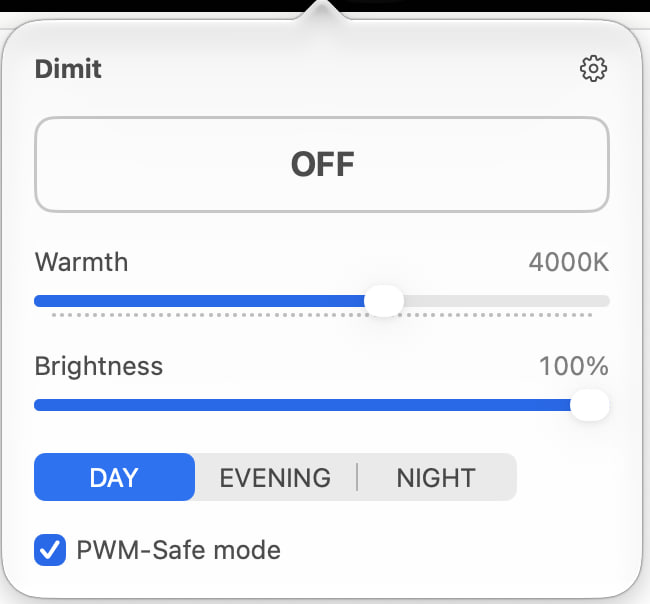
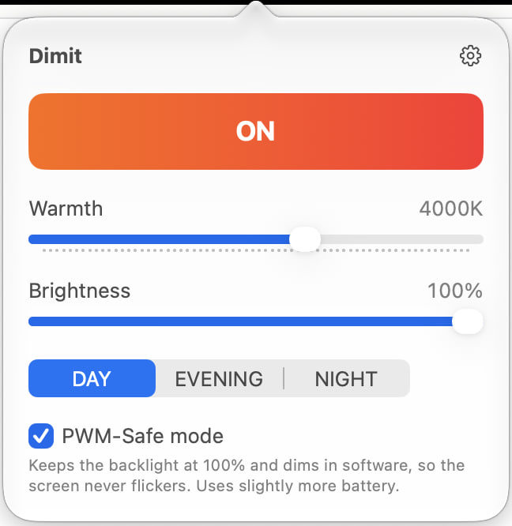

A menu-bar app for macOS. Two sliders, three presets, one button. No account, no tracking, no subscription.
Download for Mac Requires macOS 13 Ventura or later, Apple silicon or Intel. · v0.6 beta
Not notarised by Apple yet. Drag Dimit to Applications, then run this once in Terminal:
xattr -dr com.apple.quarantine /Applications/Dimit.app

Night Shift stops around 2500K and f.lux around 1900K. Dimit goes to a pure red \"0K\" — a name, not a physical temperature — by rewriting the display's colour tables, so the tint is applied by the graphics hardware itself.
The brightness keys stop at the panel's minimum. Dimit dims in software from 100% down to 10%, on every connected display, with one slider.
Many LED backlights dim by switching on and off very fast (PWM), which some people notice as flicker or strain. PWM-Safe keeps the backlight at 100% and does all dimming in software instead, so the backlight never pulses.
Because the tint lives in the display's colour tables, screenshots, screen recordings and screen shares show the real colours at any brightness. Verified with screenshots, QuickTime and Zoom.
Warms up at sunset and turns itself off at sunrise, computed on your Mac from your city or, if you allow it once, your location. Nothing is sent anywhere. Fixed times work too.
The whole app in three languages, switchable without a restart.
xattr -dr com.apple.quarantine /Applications/Dimit.appIf colours don’t change on macOS 26, turn off automatic brightness in System Settings → Displays — an Apple bug (FB22273730) affects some Macs. Dimming and PWM-Safe work regardless.
Free and open source (MIT). View source on GitHub · Buy me a coffee
macOS uchun menyu paneli ilovasi. Ikki slayder, uch rejim, bitta tugma. Akkaunt yo‘q, kuzatuv yo‘q, obuna yo‘q.
Mac uchun yuklab olish macOS 13 Ventura yoki undan yangisi kerak, Apple silicon yoki Intel. · v0.6 beta
Hali Apple tomonidan notarizatsiya qilinmagan. Dimit ni Applications ga sudrang, so‘ng Terminalda bir marta bajaring:
xattr -dr com.apple.quarantine /Applications/Dimit.appNight Shift taxminan 2500K da, f.lux esa 1900K da to‘xtaydi. Dimit displeyning rang jadvallarini qayta yozib, to‘liq qizil «0K» gacha boradi (bu nom, fizik harorat emas) — rang o‘zgarishini grafika uskunasining o‘zi bajaradi.
Yorqinlik tugmalari panelning minimumida to‘xtaydi. Dimit yorqinlikni dasturiy ravishda 100% dan 10% gacha, barcha ulangan displeylarda, bitta slayder bilan pasaytiradi.
Ko‘p LED orqa yoritishlar juda tez yonib-o‘chish (PWM) orqali xiralashadi; ba’zilar buni miltillash yoki charchoq sifatida sezadi. PWM-xavfsiz rejim orqa yoritishni 100% da ushlab, xiralashtirishni dasturiy bajaradi — orqa yoritish umuman pulslamaydi.
Rang displeyning rang jadvallarida bo‘lgani uchun, istalgan yorqinlikda skrinshotlar, ekran yozuvlari va ekran ulashishlari haqiqiy ranglarni ko‘rsatadi. Skrinshot, QuickTime va Zoom bilan tekshirilgan.
Quyosh botganda iliqlashadi, chiqqanda o‘zini o‘chiradi — shahringiz yoki (bir marta ruxsat bersangiz) joylashuvingiz asosida Mac’ingizning o‘zida hisoblanadi. Hech narsa hech qayerga yuborilmaydi. Belgilangan vaqtlar ham ishlaydi.
Butun ilova uch tilda, qayta ishga tushirmasdan almashtiriladi.
xattr -dr com.apple.quarantine /Applications/Dimit.appmacOS 26 da ranglar o‘zgarmasa, Tizim sozlamalari → Displeylar bo‘limida avtomatik yorqinlikni o‘chiring — Apple xatosi (FB22273730) ba’zi Mac’larga ta’sir qiladi. Xiralashtirish va PWM-xavfsiz rejim baribir ishlaydi.
Bepul va ochiq kodli (MIT). GitHub’da manba kodi · Menga qahva oling
Приложение для строки меню macOS. Два ползунка, три режима, одна кнопка. Без аккаунта, без слежки, без подписки.
Скачать для Mac Требуется macOS 13 Ventura или новее, Apple silicon или Intel. · v0.6 бета
Пока не нотаризовано Apple. Перетащите Dimit в Applications, затем один раз выполните в Терминале:
xattr -dr com.apple.quarantine /Applications/Dimit.appNight Shift останавливается около 2500K, f.lux — около 1900K. Dimit доходит до чистого красного «0K» (это название, а не физическая температура), переписывая цветовые таблицы дисплея, так что оттенок накладывает сама графическая система.
Клавиши яркости упираются в минимум панели. Dimit затемняет программно от 100% до 10%, на каждом подключённом дисплее, одним ползунком.
Многие LED-подсветки затемняются, очень быстро включаясь и выключаясь (ШИМ, PWM); некоторые воспринимают это как мерцание или напряжение. Режим без мерцания держит подсветку на 100% и затемняет программно — подсветка не пульсирует.
Оттенок живёт в цветовых таблицах дисплея, поэтому скриншоты, записи экрана и демонстрация экрана показывают настоящие цвета при любой яркости. Проверено скриншотами, QuickTime и Zoom.
Теплеет на закате и выключается на рассвете — вычисляется на вашем Mac по городу или, если вы один раз разрешите, по местоположению. Ничего никуда не отправляется. Заданное время тоже работает.
Всё приложение на трёх языках, переключение без перезапуска.
xattr -dr com.apple.quarantine /Applications/Dimit.appЕсли на macOS 26 цвета не меняются, отключите автояркость в Системных настройках → Дисплеи — ошибка Apple (FB22273730) затрагивает некоторые Mac. Затемнение и режим без мерцания работают в любом случае.
Бесплатно и с открытым кодом (MIT). Исходный код на GitHub · Купить мне кофе